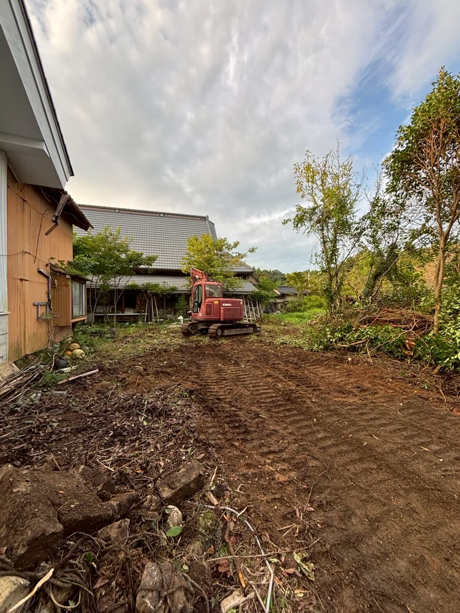

解体後の土地や放置された空き地の草刈り・整地・廃材撤去を行います。 土地売却・有効活用に向けた整備も義翔工業にお任せください。

「解体後の土地が放置されている」「相続した空き地が草だらけで近隣に迷惑をかけている」 そのようなお悩みに対応します。
義翔工業は重機・専門スタッフが直接対応。大規模な土地でも、細かい箇所でも、 丁寧に仕上げます。
FREE CONSULTATION
現地調査・お見積もりは無料です。お気軽にお問い合わせください。